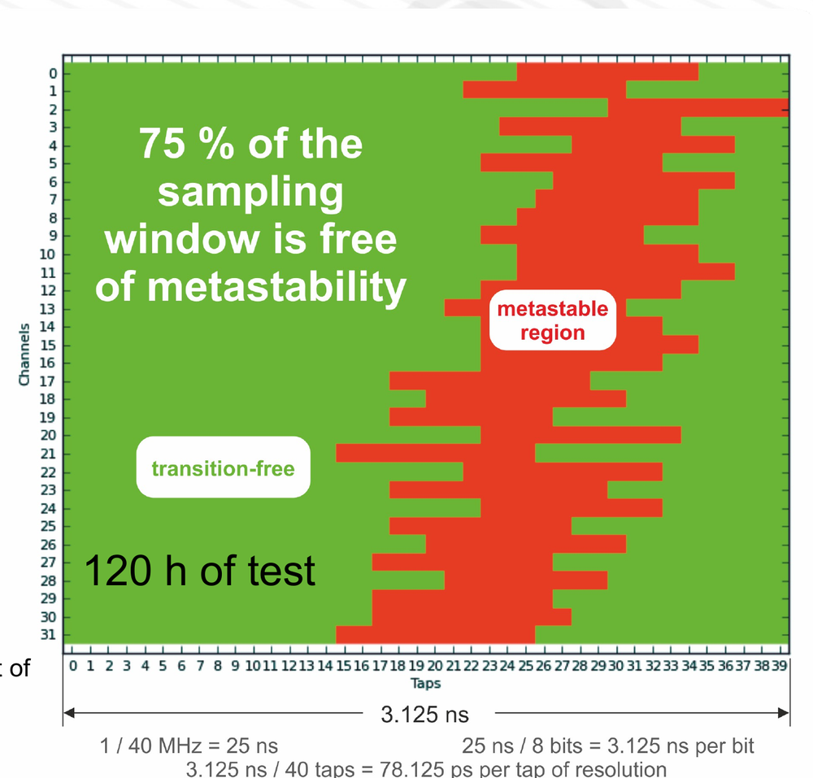
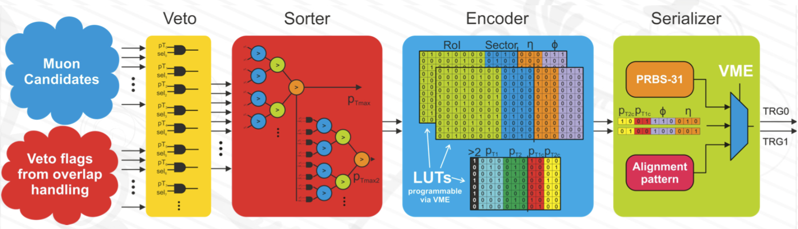

AcademicAcadêmicoParcours académique
The ATLAS Level-1 Muon Topological Trigger Information for Run 2 of the LHC
Thesis (PDF)Dissertação (PDF, em inglês)Mémoire (PDF, en anglais)Defence slides (PDF)Slides da defesa (PDF)Diapositives de soutenance (PDF)Journal paper (PDF)Artigo em revista (PDF)Article de revue (PDF)
When the Large Hadron Collider restarted in 2015 for its second run, it collided protons harder and more often than before. The ATLAS experiment needed a sharper way of deciding which collisions to keep. My master's work gave that decision a new piece of information: where the muons are.
Counting was not enough
ATLAS cannot record every collision, so a first filter built from custom electronics, the Level-1 trigger, makes a keep-or-discard decision for each one within a few millionths of a second. Muons are among the best clues that something interesting happened, because few processes produce them.
Until then, the trigger knew how many muons a collision produced and roughly how energetic they were. It did not know where they were in the detector. But some of the rarest processes physicists look for have a recognisable shape: two low-energy muons flying out close together, for example, as when a B particle decays. If you can only count, you have to keep every collision with two soft muons, and there are far too many. If you also know the angle between them, you can keep the right ones.
For the second run, ATLAS built a new processor to make decisions from this kind of geometry. It needed muon positions, and the only place that had them, fast enough, was the muon interface of the central trigger: the system I worked on.
The obstacle: no spare connection
That system had been designed years earlier and installed underground, next to the detector. Nobody had planned for it to send positions anywhere. Replacing it was not an option before the restart. It did have 32 electrical outputs on its front panels, built to send one simple signal per collision, 40 million times per second.
The idea was to push those same outputs eight times faster than they were designed for, 320 million bits per second each, and use the extra capacity to carry positions. Whether cables, connectors and chips would tolerate that was unknown.
First question: is it reliable?
I built a test system from a commercial evaluation board and two small custom cards, one to receive the signals and one to receive the experiment's clock. The outputs were made to send a known random-looking sequence, and the test system checked every bit.
The delicate point is when to read each bit. A bit lasts about 3 billionths of a second, and near its edges the signal is changing and cannot be trusted. The test system slid its reading instant across the whole bit in 40 small steps, on all outputs, and recorded where errors appeared. The picture below is the result: red where the signal is changing, green where it is stable.

Three quarters of each bit turned out to be clean, which leaves a comfortable margin. Reading in the middle of the green area, the test ran for 120 hours. The conclusion: fewer than one wrong bit in a million billion.
Second step: teaching the old system new tricks
With the connection proven, I rewrote the firmware of the 16 modules that receive the muon data. For every collision, each module now does four things in a fixed, very short time: it removes muons that two neighbouring detector regions both reported, so that none is counted twice; it sorts the remaining candidates by energy; it writes the position of the two most energetic ones in a compact code; and it sends them out, bit by bit, at the new speed.

The new firmware was checked in simulation, then on the real modules with recorded data equivalent to 1.4 billion collisions, and finally with all 16 modules sending together: ten billion collisions' worth of data received without a single error.
Third step: underground
The last tests were done with the neighbours: the interface card that converts the electrical signals to optical ones, and the new topological processor itself. Then the test system was carried down to the experiment's electronics cavern and the measurement was repeated on the installed system, with the same clean result. The system was ready for commissioning ahead of the restart.
I presented this work at an international workshop on electronics for particle physics, and it was published in the Journal of Instrumentation in 2015. It is also where I first met the problem that became my PhD: this system could pick 2 muons out of 26. Its successor would have to pick 16 out of 352.
For LHC Run 2 the ATLAS Level-1 trigger added topological selection: cuts on angular distance and other geometric relations between trigger objects, computed by a dedicated topological processor (L1Topo) whose result goes to the Central Trigger Processor. This improves efficiency for channels such as B-hadron decays to low-momentum muon pairs and lepton-flavour-violating decays. The dissertation covers the upgrade of the Muon-to-Central-Trigger-Processor Interface (MUCTPI) to provide muon topological information to L1Topo.
Constraint
The MUCTPI receives the muon candidates of 208 trigger sectors in 16 octant modules (MIOCT). It was not designed to export per-candidate information. The only available path was the two electrical trigger outputs on each MIOCT front panel, specified for 40 MHz operation; that rate is insufficient even for coarse topological information. The proposal was to overclock these 32 outputs to 320 Mb/s, eight bits per bunch crossing, without hardware changes.
Feasibility study
The MIOCT firmware was modified to transmit a pseudo-random bit sequence at multiples of 40 MHz on all outputs. After a first look at signal quality with an oscilloscope, an error-rate test system was developed on a Xilinx Kintex-7 KC705 evaluation kit with two custom FMC cards, one receiving the MUCTPI outputs and one the clock. The FPGA performs data checking and provides a control interface to a computer.
Sampling uses the ISERDES and the programmable input delay lines. Because the delay-line range does not cover a full 3.125 ns bit period, the delayed signal is oversampled with four clock phases, extending the phase adjustment range by a factor of four and allowing a scan of the whole bit period in 40 positions.
The phase scan shows 75% of the bit period free of transitions on all outputs, so an optimal sampling point with ample margin can be chosen. At that point the bit error rate is estimated to be below 1 × 10⁻¹⁵ with 98.8% confidence.
Firmware upgrade
The MIOCT firmware was extended with a processing chain that runs at the bunch-crossing rate with fixed latency: overlap handling to veto candidates reported by more than one sector, sorting of the candidates by transverse-momentum threshold, encoding of the two highest-pT candidates of the octant as coarse η and φ, and serialisation at 320 Mb/s. With two outputs per module, the system sends 10.24 Gb/s of topological information in total.
Verification
Functional VHDL simulation covered 185 thousand bunches. In-system verification, monitoring the data up to the encoding stage, checked sector data equivalent to 1.4 billion bunches. To cover serialisation and transmission as well, the test system was upgraded to receive the serial data, align and format it, and store it in DDR3 memory for comparison. With all 16 MIOCT modules transmitting a test pattern, data from 1 × 10¹⁰ bunches were received and checked without error.
Integration
Connectivity to the MuCTPiToTopo interface, which converts the electrical outputs to optical links, and onward to L1Topo was verified by reading back known patterns: about 2.6 million and 258 thousand bunches respectively, without errors. The test system was then moved to the ATLAS underground counting room (USA15) and the phase scan repeated on the installed MUCTPI, confirming reliable transmission in place. The system was declared ready for commissioning.
Publication
The work was presented at the Topical Workshop on Electronics for Particle Physics in 2014 and published as JINST 10 C02027 (2015). The dissertation was supervised by Augusto Santiago Cerqueira (UFJF) and Stefan Haas (CERN).
Quando o Grande Colisor de Hádrons voltou a funcionar em 2015, para sua segunda tomada de dados, passou a colidir prótons com mais energia e mais frequência. O experimento ATLAS precisava de um jeito mais preciso de decidir quais colisões guardar. Meu mestrado deu a essa decisão uma informação nova: onde estão os múons.
Contar não bastava
O ATLAS não consegue gravar todas as colisões, então um primeiro filtro feito de eletrônica dedicada, o trigger de Nível 1, decide guardar ou descartar cada uma em poucos milionésimos de segundo. Os múons estão entre as melhores pistas de que algo interessante aconteceu, porque poucos processos os produzem.
Até então, o trigger sabia quantos múons uma colisão produzia e, mais ou menos, quão energéticos eram. Não sabia onde estavam no detector. Mas alguns dos processos mais raros que os físicos procuram têm um formato reconhecível: dois múons de baixa energia saindo bem próximos um do outro, por exemplo, como no decaimento de uma partícula B. Se você só pode contar, precisa guardar toda colisão com dois múons fracos, e elas são numerosas demais. Se também conhece o ângulo entre eles, consegue guardar as certas.
Para a segunda tomada de dados, o ATLAS construiu um novo processador para decidir a partir desse tipo de geometria. Ele precisava das posições dos múons, e o único lugar que as tinha, com rapidez suficiente, era a interface de múons do trigger central: o sistema em que eu trabalhava.
O obstáculo: nenhuma conexão sobrando
Esse sistema tinha sido projetado anos antes e instalado no subsolo, ao lado do detector. Ninguém havia previsto que ele enviaria posições a lugar algum. Trocá-lo antes da retomada não era uma opção. Mas ele tinha 32 saídas elétricas nos painéis frontais, feitas para enviar um sinal simples por colisão, 40 milhões de vezes por segundo.
A ideia foi fazer essas mesmas saídas funcionarem oito vezes mais rápido do que o previsto, a 320 milhões de bits por segundo cada uma, e usar a capacidade extra para transportar posições. Se cabos, conectores e chips aguentariam, ninguém sabia.
Primeira pergunta: é confiável?
Montei um sistema de teste com uma placa de avaliação comercial e dois pequenos cartões sob medida, um para receber os sinais e outro para receber o relógio do experimento. As saídas passaram a enviar uma sequência conhecida, de aparência aleatória, e o sistema de teste conferia cada bit.
O ponto delicado é quando ler cada bit. Um bit dura cerca de 3 bilionésimos de segundo, e perto das bordas o sinal está mudando e não é confiável. O sistema de teste deslizou o instante de leitura por todo o bit em 40 pequenos passos, em todas as saídas, e registrou onde apareciam erros. A figura abaixo é o resultado: vermelho onde o sinal está mudando, verde onde está estável.
Três quartos de cada bit estavam limpos, o que deixa uma margem confortável. Lendo no meio da área verde, o teste rodou por 120 horas. A conclusão: menos de um bit errado em um milhão de bilhões.
Segundo passo: ensinar truques novos a um sistema antigo
Com a conexão comprovada, reescrevi o firmware dos 16 módulos que recebem os dados de múons. Para cada colisão, cada módulo agora faz quatro coisas em um tempo fixo e muito curto: remove os múons informados ao mesmo tempo por duas regiões vizinhas do detector, para que nenhum seja contado duas vezes; ordena os candidatos restantes por energia; escreve a posição dos dois mais energéticos em um código compacto; e os envia, bit a bit, na nova velocidade.
O novo firmware foi verificado em simulação, depois nos módulos reais com dados gravados equivalentes a 1,4 bilhão de colisões e, por fim, com os 16 módulos transmitindo juntos: dados de dez bilhões de colisões recebidos sem um único erro.
Terceiro passo: debaixo da terra
Os últimos testes foram feitos com os vizinhos: o cartão de interface que converte os sinais elétricos em ópticos e o próprio processador topológico. Depois o sistema de teste foi levado para a caverna de eletrônica do experimento e a medida foi repetida no sistema instalado, com o mesmo resultado limpo. O sistema estava pronto para o comissionamento antes da retomada.
Apresentei esse trabalho em um workshop internacional de eletrônica para física de partículas, e ele foi publicado no Journal of Instrumentation em 2015. Foi também ali que encontrei o problema que virou meu doutorado: esse sistema conseguia escolher 2 múons entre 26. O sucessor teria de escolher 16 entre 352.
Para o Run 2 do LHC, o trigger de Nível 1 do ATLAS ganhou seleção topológica: cortes em distância angular e em outras relações geométricas entre objetos de trigger, calculados por um processador topológico dedicado (L1Topo), cujo resultado segue para o Processador Central de Trigger. Isso aumenta a eficiência para canais como decaimentos de hádrons B em pares de múons de baixo momento e decaimentos com violação de sabor leptônico. A dissertação trata da atualização da interface de múons para o processador central de trigger (MUCTPI) para fornecer informação topológica de múons ao L1Topo.
Restrição
O MUCTPI recebe os candidatos a múon de 208 setores de trigger em 16 módulos de octante (MIOCT). Não foi projetado para exportar informação por candidato. O único caminho disponível eram as duas saídas elétricas de trigger no painel frontal de cada MIOCT, especificadas para operar a 40 MHz; essa taxa não basta nem para informação topológica grosseira. A proposta foi operar essas 32 saídas a 320 Mb/s, oito bits por cruzamento de pacotes, sem alterar o hardware.
Estudo de viabilidade
O firmware do MIOCT foi modificado para transmitir uma sequência pseudoaleatória de bits em múltiplos de 40 MHz em todas as saídas. Depois de uma primeira verificação da qualidade do sinal com osciloscópio, foi desenvolvido um sistema de teste de taxa de erro em um kit de avaliação Xilinx Kintex-7 KC705 com dois cartões FMC sob medida, um para receber as saídas do MUCTPI e outro para o clock. O FPGA faz a checagem dos dados e oferece uma interface de controle a um computador.
A amostragem usa o ISERDES e as linhas de atraso programáveis de entrada. Como a faixa das linhas de atraso não cobre um período de bit inteiro de 3,125 ns, o sinal atrasado é sobreamostrado com quatro fases de clock, o que amplia em quatro vezes a faixa de ajuste de fase e permite varrer todo o período de bit em 40 posições.
A varredura de fase mostra 75% do período de bit livre de transições em todas as saídas, o que permite escolher um ponto ótimo de amostragem com folga. Nesse ponto, a taxa de erro de bit é estimada abaixo de 1 × 10⁻¹⁵ com 98,8% de confiança.
Atualização do firmware
O firmware do MIOCT recebeu uma cadeia de processamento que opera na taxa de cruzamento de pacotes com latência fixa: tratamento de sobreposição para vetar candidatos informados por mais de um setor, ordenação dos candidatos pelo limiar de momento transverso, codificação dos dois candidatos de maior pT do octante em η e φ grosseiros e serialização a 320 Mb/s. Com duas saídas por módulo, o sistema envia ao todo 10,24 Gb/s de informação topológica.
Verificação
A simulação funcional em VHDL cobriu 185 mil cruzamentos. A verificação no sistema, monitorando os dados até o estágio de codificação, conferiu dados de setores equivalentes a 1,4 bilhão de cruzamentos. Para cobrir também a serialização e a transmissão, o sistema de teste foi atualizado para receber os dados seriais, alinhá-los, formatá-los e gravá-los em memória DDR3 para comparação. Com os 16 módulos MIOCT transmitindo um padrão de teste, dados de 1 × 10¹⁰ cruzamentos foram recebidos e conferidos sem erros.
Integração
A conectividade com a interface MuCTPiToTopo, que converte as saídas elétricas em links ópticos, e dali até o L1Topo foi verificada pela leitura de padrões conhecidos: cerca de 2,6 milhões e 258 mil cruzamentos, respectivamente, sem erros. O sistema de teste foi então levado para a sala de contagem subterrânea do ATLAS (USA15) e a varredura de fase foi repetida no MUCTPI instalado, confirmando a transmissão confiável no local. O sistema foi declarado pronto para o comissionamento.
Publicação
O trabalho foi apresentado no Topical Workshop on Electronics for Particle Physics de 2014 e publicado como JINST 10 C02027 (2015). A dissertação foi orientada por Augusto Santiago Cerqueira (UFJF) e Stefan Haas (CERN).
Lorsque le Grand collisionneur de hadrons a redémarré en 2015 pour sa deuxième période d'exploitation, il a fait entrer les protons en collision avec plus d'énergie et plus souvent. L'expérience ATLAS avait besoin d'une façon plus fine de décider quelles collisions garder. Mon master a apporté à cette décision une information nouvelle : où se trouvent les muons.
Compter ne suffisait pas
ATLAS ne peut pas enregistrer toutes les collisions ; un premier filtre fait d'électronique sur mesure, le déclenchement de niveau 1, décide donc pour chacune, en quelques millionièmes de seconde, de la garder ou de la rejeter. Les muons comptent parmi les meilleurs indices qu'il s'est passé quelque chose d'intéressant, car peu de processus en produisent.
Jusque-là, le déclenchement savait combien de muons une collision produisait et, à peu près, quelle était leur énergie. Il ne savait pas où ils se trouvaient dans le détecteur. Or certains des processus les plus rares que cherchent les physiciens ont une forme reconnaissable : deux muons de faible énergie qui partent tout près l'un de l'autre, par exemple, comme lors de la désintégration d'une particule B. Si l'on ne peut que compter, il faut garder toutes les collisions à deux muons faibles, et elles sont bien trop nombreuses. Si l'on connaît aussi l'angle entre eux, on peut garder les bonnes.
Pour la deuxième période, ATLAS a construit un nouveau processeur chargé de décider à partir de ce type de géométrie. Il lui fallait la position des muons, et le seul endroit qui la détenait, assez vite, était l'interface muons du déclenchement central : le système sur lequel je travaillais.
L'obstacle : aucune connexion libre
Ce système avait été conçu des années plus tôt et installé sous terre, à côté du détecteur. Personne n'avait prévu qu'il envoie des positions où que ce soit. Le remplacer avant le redémarrage n'était pas envisageable. Il possédait cependant 32 sorties électriques en face avant, faites pour envoyer un signal simple par collision, 40 millions de fois par seconde.
L'idée a été de faire fonctionner ces mêmes sorties huit fois plus vite que prévu, à 320 millions de bits par seconde chacune, et d'utiliser la capacité supplémentaire pour transporter les positions. Personne ne savait si les câbles, les connecteurs et les puces le supporteraient.
Première question : est-ce fiable ?
J'ai monté un banc de test avec une carte d'évaluation du commerce et deux petites cartes sur mesure, l'une pour recevoir les signaux et l'autre pour recevoir l'horloge de l'expérience. Les sorties envoyaient une séquence connue, d'apparence aléatoire, et le banc vérifiait chaque bit.
Le point délicat est le moment où l'on lit chaque bit. Un bit dure environ 3 milliardièmes de seconde, et près de ses bords le signal est en train de changer et n'est pas fiable. Le banc a fait glisser l'instant de lecture sur tout le bit en 40 petits pas, sur toutes les sorties, et noté où apparaissaient les erreurs. La figure ci-dessous en est le résultat : en rouge là où le signal change, en vert là où il est stable.
Les trois quarts de chaque bit se sont révélés propres, ce qui laisse une marge confortable. En lisant au milieu de la zone verte, le test a tourné 120 heures. La conclusion : moins d'un bit faux sur un million de milliards.
Deuxième étape : apprendre de nouveaux tours à un ancien système
La connexion étant validée, j'ai réécrit le firmware des 16 modules qui reçoivent les données des muons. Pour chaque collision, chaque module fait désormais quatre choses en un temps fixe et très court : il écarte les muons signalés à la fois par deux régions voisines du détecteur, afin qu'aucun ne soit compté deux fois ; il trie les candidats restants par énergie ; il écrit la position des deux plus énergétiques dans un code compact ; et il les envoie, bit par bit, à la nouvelle vitesse.
Le nouveau firmware a été vérifié en simulation, puis sur les vrais modules avec des données enregistrées équivalant à 1,4 milliard de collisions, et enfin avec les 16 modules émettant ensemble : les données de dix milliards de collisions reçues sans la moindre erreur.
Troisième étape : sous terre
Les derniers tests ont été faits avec les voisins : la carte d'interface qui convertit les signaux électriques en signaux optiques, et le nouveau processeur topologique lui-même. Le banc de test a ensuite été descendu dans la caverne d'électronique de l'expérience et la mesure a été répétée sur le système installé, avec le même résultat propre. Le système était prêt pour la mise en service avant le redémarrage.
J'ai présenté ce travail à un atelier international d'électronique pour la physique des particules, et il a été publié dans le Journal of Instrumentation en 2015. C'est aussi là que j'ai rencontré le problème devenu ma thèse : ce système savait choisir 2 muons parmi 26. Son successeur devrait en choisir 16 parmi 352.
Pour le Run 2 du LHC, le déclenchement de niveau 1 d'ATLAS a reçu une sélection topologique : des coupures sur la distance angulaire et sur d'autres relations géométriques entre objets de déclenchement, calculées par un processeur topologique dédié (L1Topo) dont le résultat est transmis au processeur central de déclenchement. L'efficacité s'en trouve améliorée pour des canaux comme les désintégrations de hadrons B en paires de muons de faible impulsion et les désintégrations violant la saveur leptonique. Le mémoire porte sur la mise à niveau de l'interface muons vers le processeur central de déclenchement (MUCTPI) afin de fournir l'information topologique des muons à L1Topo.
Contrainte
Le MUCTPI reçoit les candidats muons de 208 secteurs de déclenchement dans 16 modules d'octant (MIOCT). Il n'a pas été conçu pour exporter une information par candidat. Le seul chemin disponible était celui des deux sorties électriques de déclenchement en face avant de chaque MIOCT, spécifiées pour fonctionner à 40 MHz ; ce débit ne suffit même pas pour une information topologique grossière. La proposition a été de faire fonctionner ces 32 sorties à 320 Mb/s, soit huit bits par croisement de paquets, sans modification matérielle.
Étude de faisabilité
Le firmware du MIOCT a été modifié pour émettre une séquence binaire pseudo-aléatoire à des multiples de 40 MHz sur toutes les sorties. Après un premier contrôle de la qualité du signal à l'oscilloscope, un banc de mesure du taux d'erreur a été développé sur un kit d'évaluation Xilinx Kintex-7 KC705 avec deux cartes FMC sur mesure, l'une recevant les sorties du MUCTPI et l'autre l'horloge. Le FPGA vérifie les données et offre une interface de commande à un ordinateur.
L'échantillonnage utilise l'ISERDES et les lignes à retard programmables d'entrée. La plage des lignes à retard ne couvrant pas une période de bit entière de 3,125 ns, le signal retardé est suréchantillonné avec quatre phases d'horloge, ce qui multiplie par quatre la plage de réglage de phase et permet de balayer toute la période de bit en 40 positions.
Le balayage de phase montre que 75 % de la période de bit est exempte de transitions sur toutes les sorties ; on peut donc choisir un point d'échantillonnage optimal avec une large marge. En ce point, le taux d'erreur binaire est estimé inférieur à 1 × 10⁻¹⁵ avec une confiance de 98,8 %.
Mise à niveau du firmware
Le firmware du MIOCT a été complété par une chaîne de traitement fonctionnant à la fréquence de croisement des paquets avec une latence fixe : gestion des recouvrements pour écarter les candidats signalés par plus d'un secteur, tri des candidats selon le seuil d'impulsion transverse, encodage des deux candidats de plus haut pT de l'octant en η et φ grossiers, et sérialisation à 320 Mb/s. Avec deux sorties par module, le système envoie au total 10,24 Gb/s d'information topologique.
Vérification
La simulation fonctionnelle VHDL a couvert 185 000 croisements. La vérification sur le système, en observant les données jusqu'à l'étage d'encodage, a contrôlé des données de secteurs équivalant à 1,4 milliard de croisements. Pour couvrir aussi la sérialisation et la transmission, le banc de test a été mis à niveau afin de recevoir les données série, de les aligner, de les formater et de les stocker en mémoire DDR3 pour comparaison. Les 16 modules MIOCT émettant un motif de test, les données de 1 × 10¹⁰ croisements ont été reçues et vérifiées sans erreur.
Intégration
La connectivité avec l'interface MuCTPiToTopo, qui convertit les sorties électriques en liaisons optiques, puis jusqu'à L1Topo a été vérifiée par relecture de motifs connus : environ 2,6 millions et 258 000 croisements respectivement, sans erreur. Le banc de test a ensuite été déplacé dans la salle de comptage souterraine d'ATLAS (USA15) et le balayage de phase a été répété sur le MUCTPI installé, confirmant la fiabilité de la transmission sur place. Le système a été déclaré prêt pour la mise en service.
Publication
Le travail a été présenté au Topical Workshop on Electronics for Particle Physics en 2014 et publié sous la référence JINST 10 C02027 (2015). Le mémoire a été dirigé par Augusto Santiago Cerqueira (UFJF) et Stefan Haas (CERN).